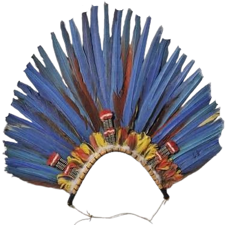
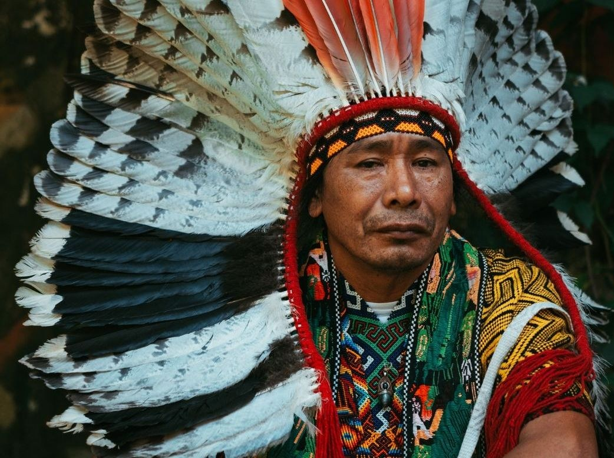

Brazilian Indigenous mythology is a vast body of oral traditions belonging to more than 300 indigenous peoples; despite its name, this mythology is also revered in other South American countries, such as Paraguay, Argentina, and Bolivia.
Given this vast scope, this mythology has different offshoots and variations depending on the region and people—such as Guarani mythology, which encompasses only the peoples of this tribe and the aforementioned neighboring countries.
A very common feature of this mythology is the blending of mythology and folklore; since there are multiple versions of tales involving certain beings, some of them belong to both categories.
Concepts
Personification of nature: in the Indigenous worldview, rivers, forests, mountains, and animals possess "spirits" or "owners" (guardians). Hunting, fishing, and gathering require rituals of respect to maintain ecological balance and avoid the wrath of these protectors.
Preservation: entities such as Iara (Mother of the Waters) act as guardians of ecosystems. Biodiversity is not viewed as a resource to be exploited, but rather as an extension of the social and spiritual body itself.

Pajé: the mediator between the physical and spiritual worlds. Through rituals, chants, and power plants (such as tobacco or ayahuasca), the pajé communicates with spirits to heal illnesses, ensure abundance, and restore cosmic order.
Gods
Tupã: creator of heaven, earth, and humanity, "Lord of Thunder"
Jaci: personification of the moon, guardian of the night
Guaraci: god of the sun and fire
Anhangá: god of the underworld or infernal realms, a wandering spirit that can take the
form of various animals.
Ceuci: protector of Indigenous dwellings and crops
Sumé: guardian of agriculture and responsible for the discipline and social
organization of indigenous peoples
Akuanduba: god of the piece
Yorixiriamori: a god who won over women with his singing
Iara: goddess of the waters, mermaid who lures fishermen with her song
Wanadi: kindness on Earth
How this reaches us
Fantasy and adventure works often seek out stories rich in culture, shamanism, and a powerful connection to nature—elements found in abundance in Indigenous Brazilian mythology. Consequently, many box-office hits inspired by this mythology have gone on to inspire other works, ensuring it remains a part of our daily lives, often without us even realizing it.
Examples of famous works that use this mythology as a reference are Avatar, Jungle Cruise, Invisible City, Indiana Jones, Pokémon, Michiko and Hatchin, The Rundown, etc.